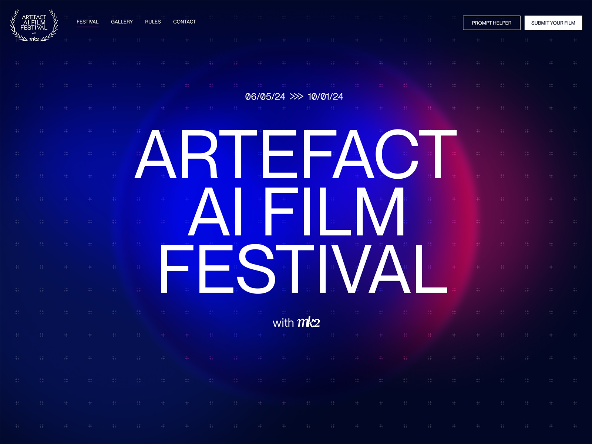

Enhancing User Experience Through Typography |
 |
Which Font Works Best for Your Design?The choice of font styles is pivotal in crafting impactful designs, as it shapes perceptions, evokes emotions, and communicates messages effectively. While every font has its strengths, understanding their nuances and proper applications is essential for achieving your design objectives. Choosing the right font depends on your project's tone, audience, and medium. Whether you need a timeless serif for a formal document or a playful script for a party invitation, understanding these categories will help you make informed design decisions. Exploring Effective Color Design: A Personal TakeawayDuring my research on what defines good or bad typography in a layout, I explored several websites showcasing diverse approaches. A few stood out for their exceptional use of font choices, employing various sizes and styles to make typography the focal point of the design. These sites effectively utilized typography to guide navigation throughout their pages. They demonstrated a masterful balance of contrast and harmony, combining fonts in ways that were both unconventional and visually cohesive. The interplay of these elements created designs that not only complemented the overall aesthetic but also deeply engaged the viewer. Read my detailed reviews below to discover how effective typography can transform web design into a true art form.. |

A Review of "In Space We Trust"The MEW is a perfect example of how bold typography and strategic use of color can enhance the user experience. The site features a vibrant red background paired with black typography throughout, creating a striking visual contrast. This combination results in a clean, playful, and intuitive navigation system that immediately captures attention and guides users effortlessly through the content...more on Color Schemes. Unlike most websites that rely heavily on imagery, MEW places fonts at the forefront, utilizing varying sizes and innovative placements to double as both text and graphic elements. Some fonts are even used as masks, adding a dynamic visual layer to the design. These transitions are not only captivating but also maintain readability, ensuring the site remains engaging without overwhelming the viewer. The interplay of contrasting font sizes and thoughtful design choices kept me intrigued, encouraging deeper exploration and anticipation of what might come next. This meticulous application of typography—balancing bold contrasts with visual comfort—elevates the site to a standout example of animated web design that is both functional and aesthetically stunning. |
ProsStriking Visual Appeal:
|
ConsPotential Overwhelmveruse of Dark Background:
|
|
Conclusion
This design approach is bold, engaging, and innovative, but it needs careful attention to accessibility and audience preferences to ensure it appeals to a broad user base. |

A Review of Assiko.com"The "Artefacts" website is a masterclass in minimalist animation and effective design. Utilizing the full screen, it employs a clean, simple layout with a subtle gradient background that complements its well-thought-out structure. The page opens with a stunning display of large Serif fonts used as the logo, setting a refined and consistent tone for the entire site. This thoughtful typography choice extends throughout, with variousfont styles and sizes creating a clear hierarchy for blocks of text. The bold headings and statements guide users effortlessly through the content, making navigation intuitive and engaging. What sets "Artefacts" apart is its restraint in using images, focusing instead on highly readable and well-organized text. The result is a visually appealing experience that feels uncluttered and easy on the eyes. The site’s balance of simplicity and sophistication demonstrates how thoughtful design can elevate both usability and aesthetic appeal. |
ProsTypography-Driven Design:
|
ConsTypography Overload:
|
|
Conclusion
Overall, "Artefacts" excels in delivering a clean and sophisticated user experience through thoughtful typography and layout. However, its minimalistic nature and reliance on typography may not cater to all user preferences or needs. Balancing simplicity with additional interactive or visual elements could further enhance its appeal. |